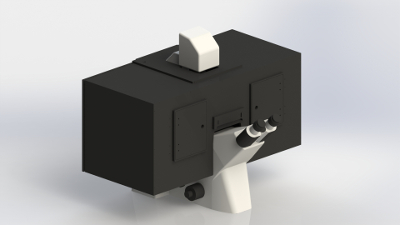
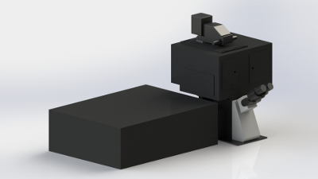
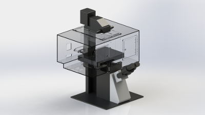

Zeiss Inverted Microscope Chamber Systems
Digital Pixel design and manufacture a range of chamber systems for Zeiss inverted microscopes.
Systems are available for use with the Zeiss widefield, as well as the Zeiss 780 and 880 Confocal systems.
The system stability of the Elyra Super Resolution Microscope can be enhanced by using our heaters to gently warm the system to 220C
SuperSealTM System
Designed for researchers at the University of Heidelberg, the application required that full access to a multi well dish was required,
in order to add a drug when certain points in the cell cycle were reached. However full CO2 control in the sample area is essential to
maintaining cell viability. Our unique Enhanced Sealing Technology provides CO2 control within the whole chamber.
Great Ergonomics
The top of the chamber is directly connected to the transmitted light column of the Zeiss inverted systems, so getting access to the
sample area is simple and easy. Removable panels provide easy access to cameras and other peripherals.


Leica Inverted Microscope Chamber Systems
Digital Pixel support both the current Leica DMi8 as well as the DMI6000 range of inverted microscopes in wide field as well as
configurations compatible with the Leica SP5 and SP8 confocal systems.
Leica DMi8 Chamber Variants
We have developed three designs based on customer requirements for the DMi8 microscope.Two of our designs go to the optical table, one is mounted directly onto the microscope.
Of the two designs that are table mounted, one is designed to allow the researcher greater access to the microscope
by removing the main front panel of the chamber. This is typically used in Super Resolution configurations.
The microscope mounted system is normally used either for wide field or spinning disk systems.
Here the emphasis is on keeping clear space around the base of the microscope for peripherals such as cameras, beam splitters etc.
The Digital Pixel Solution is mounted directly on the microscope, and does not require support poles.



Olympus Inverted Microscope Chamber Systems IX81, IX73 and IX83
Digital Pixel have designed and supplied chamber system onto several ranges of Olympus microscopes. This includes the Olympus TIRF system as well as Super Resolution systems based on the Olympus platform such as the Abberior STED Microscope.
Our design is mounted on the microscope to provide full access to the removable optical components on the microscope chassis.
Our designs are compatible with both the single and double layer variants of the new Olympus inverted microscope range

Nikon Inverted Microscope Chamber Systems Ti-E single and double layer
The Nikon TI-E microscope is available as a single or double layer microscope. Digital Pixel chambers are available for both of these systems.
We have also designed systems for use with the TI-E when combined with either the Nikon A1 Confocal, or Yokogawa Spinning Disk systems
from Visitron, Andor or Perkin Elmer.
All of our designs provide excellent access to the microscope. Chambers are available in either clear, mast black, shaded or mixed, with matt back to all sides of the chamber apart from the front, which is clear. The latter systems are available with internal LED illumination.
CO2 Gas Controller Systems
A wide variety of cell systems, require a closely controlled CO2 concentration to maintain cell viability over extended periods.
While it is possible to use 5% CO2 cylinders, these are expensive, bulky and provide limited flexibility in terms of the CO2 concentration range possible.
Put simply 5% CO2 concentration at the cylinder does not guarantee the optimum outcome for your cells.
Furthermore the use of flow based mixing systems, while a little less expensive provide far from consistent gas concentrations.
There are three options in the Digital Pixel range of CO2 controllers, designed to meet the needs of a single microscope system, or those of a Core Microscope Facility, and finally for use with our SuperSealTM enhanced sealed chamber system. System installation is easy.
Digital Pixel CO2 controllers only require 100% CO2. Additional gas supplies such as air or N2 are not necessary.
DP_CO2_CONTROLLER_CORE
This system is designed to meet the CO2 requirements of several microscope systems. It has an enhanced pumping system, and is supplied with 6mm OD tubing and flow controllers to supply up to three microscopes, provided the total flow distance is less than 15 meters. The flow rate can be controlled internally over four flow setting using a simple rate dial. The easy to use front panel shows the CO2 CONC SET, and the CO2 CONC ACTUAL. The range of the system is 0.1-20%.DP_CO2_CONTROLLER_SINGLE
Designed to meet the CO2 requirements of a single microscope system, it features a long life internal pump. Again the flow Rate can be controlled, with four flow setting including OFF without turning the controller OFF. This feature means you can be ready to go at any time. Again the CO2 concentration range is 0.1-20%. Optionally Relative Humidity Monitoring and control is also possible.DP_CO2_CONTROLLER_SUPERSEAL
This system is designed to control the CO2 concentration within a whole chamber. It must be used in conjunction with one of our SuperSealTM Chamber Systems. In this configuration CO2 is delivered directly into the sample area. CO2 concentration is measured close to the sample are. These systems are designed for applications requiring complete access to the sample, for example for the addition of a drug or other perturbing material during a time lapse experiment.Features-
- High Performance NIRD CO2 detector used to monitor concentration.
- Long life pump provides excellent gas delivery.
- Microprocessor controlled concentration levels- No Guess work
- Only 100% CO2 gas supply required for full operation- No O2 or N2 required.
Sealed Inserts
As part of our gas controller range we have also designed a range of sealed inserts for industry standard motorised stages. Normal inserts are open and as a result cannot maintain when a desired CO2 concentration in the sample area.
Digital Pixel Sealed Inserts are designed to maintain CO2 concentration at the sample.
Gas is introduced through a push/pull 3mm OD flexible tube fitting. This provides easy connectivity while minimising any
tubing drag on the stage. A clear glass lid allows easy access to the sample. Our inserts accept multi well dishes, as well as slides and Petri dishes.